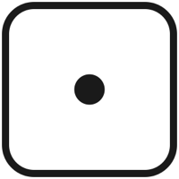
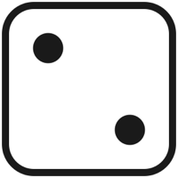
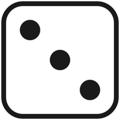
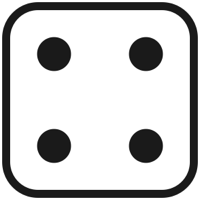
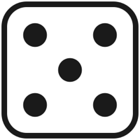
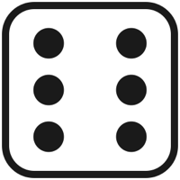

Застосунок рахує і кидає кубик
Розробка мобільних додатків · 6 клас · Урок 11 з 36 · 20 листопада
На екрані 0 → «+10» → 10 → «+1» → 11. Що в підкові Button10?
Клацніть, щоб перевірити.
Пункт 2 · Button1 додає 2 · на старті 0
Яке число в Label1 у кінці?
Клацніть, щоб перевірити.
4 — 2, 4, 6 → скинули на 0 → 2, 4
Де лежить initialize global — у підкові чи окремо?
Клацніть, щоб перевірити.
Окремо, на порожньому місці Blocks
Чим get відрізняється від set?
Клацніть, щоб перевірити.
get бере число, set кладе нове
Де шукати блоки чисел і +?
Клацніть, щоб перевірити.
Built-in → Math, сині блоки
Змінна росте, а на екрані весь час 0. Чого бракує?
Клацніть, щоб перевірити.
set Label1.Text to get global score
| Блок | Дія | Приклад | Відповідь |
|---|---|---|---|
| 7 + 3 | додати | 7 + 3 | 10 |
| 7 − 3 | відняти | 7 − 3 | 4 |
| 7 × 3 | помножити | 7 × 3 | 21 |
| 7 / 3 | поділити | 7 / 3 | 2.33… |
2 + 3 = 5 → 5 × 4 = 20
3 × 4 = 12 → 2 + 12 = 14
Клацніть, щоб перевірити.
6
Клацніть, щоб перевірити.
24 — спершу 10 − 2 = 8, потім 8 × 3
Клацніть, щоб перевірити.
4.5 — ділення дає дріб
Клацніть, щоб перевірити.
10 — змінна теж іде в гніздо Math
| Блок | Що дає | Приклад |
|---|---|---|
| random integer from 1 to 6 | ціле число від 1 до 6 — обидва кінці теж можуть випасти | 4, 1, 6, 6, 2… |
| random fraction | дріб від 0 до 1 | 0.374… |
| random set seed to 7 | робить «випадкові» числа однаковими при кожному запуску — для перевірки | рідко |
Клацніть, щоб перевірити.
Ні. Найменше — 1
Клацніть, щоб перевірити.
Так. Обидві межі входять
Клацніть, щоб перевірити.
10, 11, 12 — лише три
Клацніть, щоб перевірити.
Від 2 до 7: до кожного кидка додали 1






Картинки граней: sv2627.github.io/sc/aplus/6-mobile/u11/ → dice1.png … dice6.png → правий клік → «Зберегти зображення» → у App Inventor Media → Upload File… — усі шість.
+ − × /
блок у блоці
random integer from 1 to 6
random fraction
random set seed to
join "dice" chyslo ".png"
set Image1.Picture to
Урок 12 · 27 листопада · Canvas і ImageSprite
До пункту 1
До пункту 2а